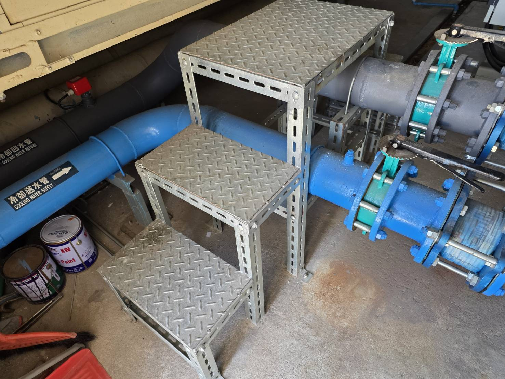

一、這類問題為什麼容易誤判？
現場常見的情況是：冰水主機附近聽起來並沒有特別嚴重，但距離設備較遠的辦公室、樓下或另一個區域，反而有持續的低頻嗡嗡聲。這時若只把注意力放在設備本體，很可能找不到真正的傳遞路徑。
二、振動可能透過哪些路徑傳出去？
設備運轉產生的微小振動，可能經由冰水管、冷卻水管、管夾、吊架、穿牆位置及樓板傳到建築結構。當某段結構的自然頻率與設備運轉頻率接近時，就可能形成共振，使遠端空間的感受反而更明顯。
三、實務上建議先處理什麼？
共振問題通常不是單一因素，因此很難在改善前承諾固定成果。較務實的方式是先從管路支撐與吊架、降低與RC結構的剛性接觸著手，再依改善後的結果逐步排除其他傳振點。
工程提醒：若一開始就直接做大面積隔音，而主要問題其實是結構傳振，效果可能有限。